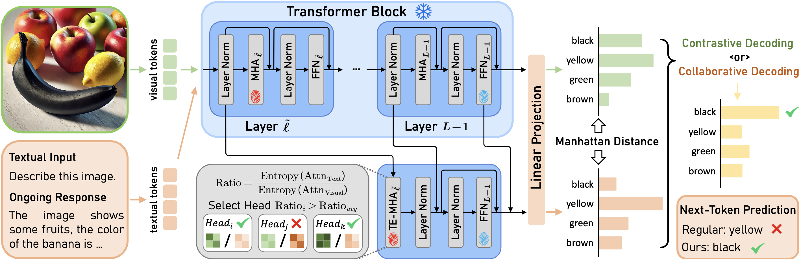
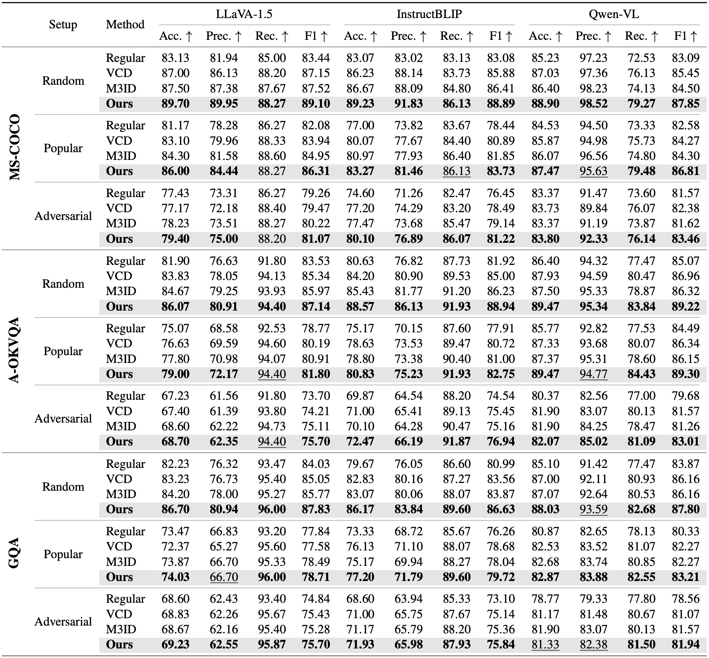
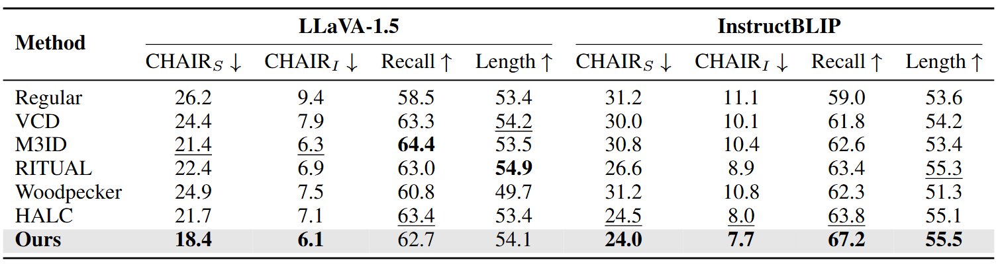
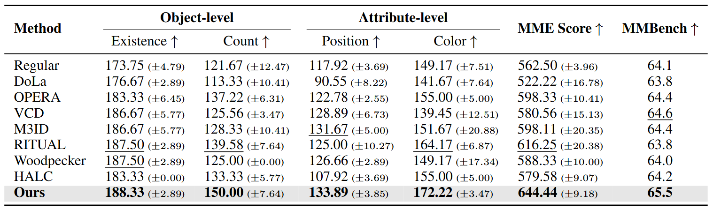
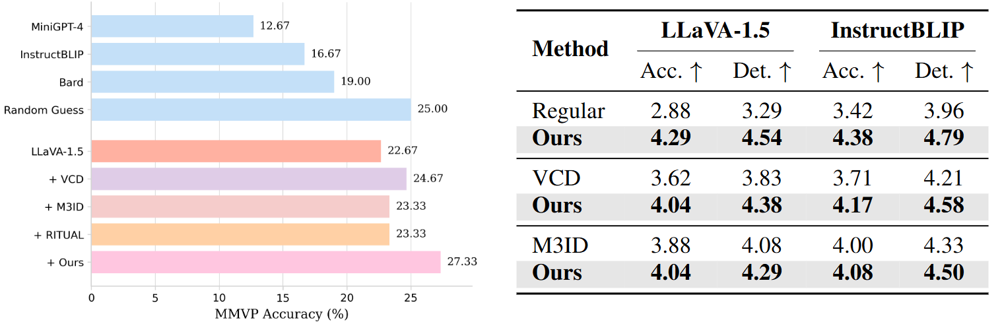
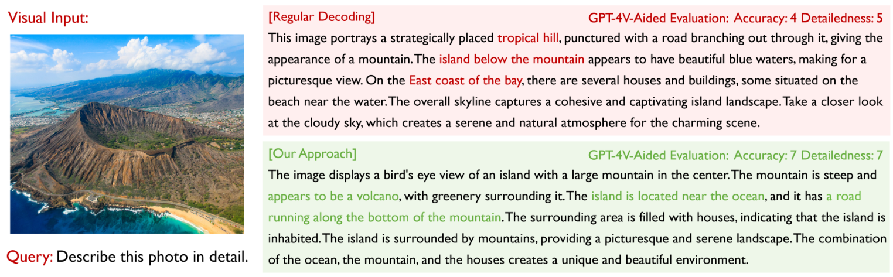

$^{*}$Equal contribution School of Computer Science, Carnegie Mellon University ICLR 2025
PaperarXivCode Figure 1. Generative models can visualize and help correct various types of hallucinations in the initial response.
In the first query, we provide LLaVA-1.5 with the prompt "Describe this image in detail " to produce captions for two examples from LLaVA-Bench. Based on the initial response, we utilize Stable Diffusion XL to generate a new image $v'$, which effectively highlights hallucinations and provides valuable self-feedback. In the second query, our approach incorporates both the original image $v$ and the generated image $v'$ into the decoding process, using the feedback to successfully correct various types of hallucinations.

Figure 2. Overview of our proposed DeGF.
Our method follows a two-step process: first, a generative model produces a high-quality image based on the initial response; second, this image acts as an auxiliary visual reference, providing feedback to refine the next-token predictions. Additionally, we introduce self-correcting decoding, which either enhances or contrasts the next-token predictions conditioned on the original and generated images to mitigate hallucinations in the LVLM response.
Highlights
We investigate the potential of text-to-image generative models in mitigating hallucinations in LVLMs and demonstrate that text-to-image generative models can provide valuable self-feedback for mitigating hallucinations at both the response and token levels.
We propose self-correcting Decoding with Generative Feedback (DeGF), a novel training-free decoding algorithm for LVLMs that recursively enhances the accuracy of responses by integrating feedback from text-to-image generative models with complementary/contrastive decoding.
Extensive experimental evaluations across six benchmarks demonstrate that our DeGF consistently outperforms state-of-the-art approaches in effectively mitigating hallucinations in LVLMs.
Abstract
While recent Large Vision-Language Models (LVLMs) have shown remarkable performance in multi-modal tasks, they are prone to generating hallucinatory text responses that do not align with the given visual input, which restricts their practical applicability in real-world scenarios. In this work, inspired by the observation that the text-to-image generation process is the inverse of image-conditioned response generation in LVLMs, we explore the potential of leveraging text-to-image generative models to assist in mitigating hallucinations in LVLMs. We discover that generative models can offer valuable self-feedback for mitigating hallucinations at both the response and token levels. Building on this insight, we introduce self-correcting Decoding with Generative Feedback (DeGF), a novel training-free algorithm that incorporates feedback from text-to-image generative models into the decoding process to effectively mitigate hallucinations in LVLMs. Specifically, DeGF generates an image from the initial response produced by LVLMs, which acts as an auxiliary visual reference and provides self-feedback to verify and correct the initial response through complementary or contrastive decoding. Extensive experimental results validate the effectiveness of our approach in mitigating diverse types of hallucinations, consistently surpassing state-of-the-art methods across six benchmarks. Code is available at https://github.com/zhangce01/DeGF.
Experimental Results
Results on POPE

Table 1. Results on POPE benchmark
Higher ($\uparrow$) accuracy, precision, recall, and F1 indicate better performance. The best results are bolded, and the second-best are underlined.
Results on CHAIR

Table 2. Results on CHAIR benchmark. We limit the maximum number of new tokens to 64. Lower ($\downarrow$) CHAIR$_S$, CHAIR$_I$ and higher ($\uparrow$) recall and length indicate better performance. The best results in each setting are bolded, and the second-best are underlined.
Results on MME

Table 3. Results on MME-Hallucination and MMBench benchmark.
We report the average MME scores along with the standard deviation across three random seeds for each subset. We also report the overall accuracy achieved by the different methods on the MMBench benchmark in the final column. Higher scores ($\uparrow$) indicate better performance. The best results are bolded, and the second-best are underlined.
Results on MMVP and GPT-4V-Aided Evaluation on LLaVA-Bench

Figure 3. Results on MMVP and GPT-4V-Aided Evaluation on LLaVA-Bench.
(Left) We apply our approach to LLaVA-1.5 and compare its performance against other hallucination mitigation methods; (Right) Higher accuracy and detailedness ($\uparrow$) indicate better performance. The evaluation is performed on LLaVA-1.5.
Case Study on LLaVA-Bench

Figure 4. Case study on the LLaVA-Bench benchmark.
We compare the responses generated by regular decoding and our method using LLaVA-1.5. GPT-4V-aided evaluation results are also provided alongside the responses. Hallucinated and accurate content is highlighted in red} and green.
Poster
Video Presentation
BibTeX
@inproceedings{zhang2025selfcorrecting,
title={Self-Correcting Decoding with Generative Feedback for Mitigating Hallucinations in Large Vision-Language Models},
author={Ce Zhang and Zifu Wan and Zhehan Kan and Martin Q. Ma and Simon Stepputtis and Deva Ramanan and Russ Salakhutdinov and Louis-Philippe Morency and Katia P. Sycara and Yaqi Xie},
booktitle={The Thirteenth International Conference on Learning Representations},
year={2025},
url={https://openreview.net/forum?id=tTBXePRKSx}
}